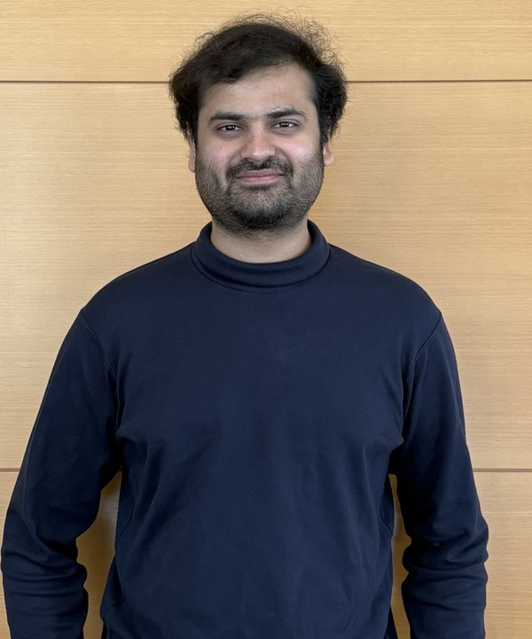

Procompetitive Consequences of Workfare
Draft ↗
Arnav Deshpande
New York University
I'm a third-year Economics PhD student at New York University, working in macroeconomics and macro-development.

Working papers
Work in progress
Chasing Demand
Technology and Search in the Market for Rental Housing
Draft ↗
Pre-doctoral
Challenges to Measuring Immunization Coverage with Asynchronous Surveys